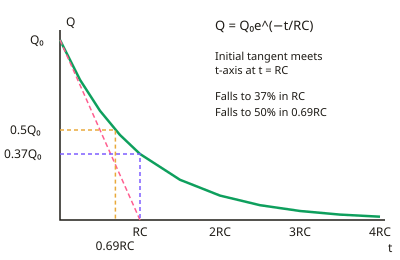

A-level Physics Year 13 · Topic 26
Maths skills for Year 13 physics
Maths skills for year thirteen physics brings together the tools you need for the hardest calculations and graphs.
We will use exponentials and logarithms, and turn curved graphs into straight lines.
Then we use radians and the small-angle approximation, find gradients and areas under graphs, and meet simple calculus in physics.
- 5 subtopics
- 171 questions
- Free: 26.1 notes and 10 questions
In this topic
- 26.1Exponential and logarithmic functions (e^x, ln, decay and discharge)Free below · 57 questions
- 26.2Logarithmic graphs: linearising exponential and power lawsOpen in Full Marks · 59 questions
- 26.3Radians, trigonometric functions and the small-angle approximationOpen in Full Marks · 14 questions
- 26.4Gradients, tangents and areas under graphs as rates of change and totalsOpen in Full Marks · 26 questions
- 26.5Introductory calculus in physics: SHM, induction and field–potential relationsOpen in Full Marks · 15 questions
26.1 · Free notes
Exponential and logarithmic functions (e^x, ln, decay and discharge)

Key points
- An exponential decay has the form x = x₀e^(−kt). The rate of change is proportional to the amount present (dx/dt = −kx), so equal time intervals give equal fractional (constant-ratio) changes.
- Capacitor discharge: Q = Q₀e^(−t/RC), V = V₀e^(−t/RC) and I = I₀e^(−t/RC). All three fall by the same factor in the same time.
- The time constant τ = RC (units: Ω × F = s) is the time for Q, V or I to fall to 1/e ≈ 37% of its initial value. The tangent at t = 0 meets the time axis at t = RC.
- Charging: Q = Q₀(1 − e^(−t/RC)) and V = V₀(1 − e^(−t/RC)), while I = I₀e^(−t/RC). After one time constant the charge has reached about 63% of its final value.
- Radioactive decay: N = N₀e^(−λt) and A = A₀e^(−λt), where λ is the decay constant (s⁻¹, h⁻¹ or year⁻¹) and activity A = λN.
- Half-life and decay constant are linked by T½ = ln 2/λ ≈ 0.693/λ. The same idea gives the time to halve a discharging capacitor's charge, t½ = 0.693RC.
- ln is the inverse of e^x: ln(e^x) = x and e^(ln x) = x. Use ln, not log₁₀, to rearrange e-based equations, e.g. t = −RC ln(Q/Q₀).
- Log rules: ln(ab) = ln a + ln b; ln(a/b) = ln a − ln b; ln(aⁿ) = n ln a; ln 1 = 0. ln(a + b) cannot be split into separate logs.
- The gradient of a decay curve at any time is −λ × (the value at that time), e.g. I = −dQ/dt = Q/RC. It decreases with time and is not constant.
- Absorption of radiation follows the same form: I = I₀e^(−μx), where μ is the attenuation coefficient (m⁻¹). The half-value thickness is x½ = ln 2/μ.
- Exam traps: use consistent units for t and RC (or λ), remember one time constant leaves 1/e (37%) not 1/2 (50%), and give units and sensible significant figures.
In more detail
- Worked discharge: RC = 2.0 s and V₀ = 12 V → after 3.0 s, V = 12e^(−1.5) = 2.7 V.
- Worked time to fall: to fall to 25%, t = RC ln 4 = 2.0 × 1.39 = 2.8 s, which is two half-lives (T½ = 0.693RC = 1.39 s).
- Worked decay: T½ = 5.0 min → λ = 0.693 ÷ 300 = 2.31 × 10⁻³ s⁻¹; after 12 min, N/N₀ = e^(−2.31 × 10⁻³ × 720) = 0.19.
- Worked rearranging: 0.20 = e^(−t/RC) → −t/RC = ln 0.20 → t = RC ln 5 = 1.61RC.
Practice
Exponential and logarithmic functions (e^x, ln, decay and discharge): 10 questions
Pick an answer to check it, or open the answer for the explanation.
1. A 470 µF capacitor discharges through a 22 kΩ resistor. What is the time constant?
- 103 s
- 48 s
- 10.3 s
- 0.103 s
Show answer
C: 10.3 s. τ = RC = 470×10⁻⁶ F × 22×10³ Ω = 10.3 s. Check the powers of ten: µ is 10⁻⁶ and k is 10³.
2. A capacitor discharges from 12 V with RC = 5.0 s. What is the p.d. after 8.0 s?
- 5.4 V
- 7.5 V
- 2.4 V
- 9.6 V
Show answer
C: 2.4 V. V = 12e^(−8.0/5.0) = 12e^(−1.6) = 12 × 0.202 = 2.4 V. 9.6 V is the charging value 12(1 − e^(−1.6)).
3. A radioactive nuclide has decay constant λ = 0.020 s⁻¹. What is its half-life?
- 35 s
- 50 s
- 69 s
- 0.014 s
Show answer
A: 35 s. T½ = ln 2/λ = 0.693/0.020 = 34.7 s ≈ 35 s. 50 s is just 1/λ, which is the mean life, not the half-life.
4. Which statement about the time constant of a discharging capacitor is correct?
- After RC the charge has fallen to 50% of its initial value
- After RC the charge is 63% of its initial value
- After RC the charge is about 37% of its initial value
- After RC the capacitor is fully discharged
Show answer
C: After RC the charge is about 37% of its initial value. Q = Q₀e^(−1) = 0.37Q₀ after t = RC. 63% is the fraction gained in charging, 50% applies after 0.69RC, and it never reaches exactly zero.
5. What is ln 8 + ln 0.5 equal to?
- ln 4
- ln 8.5
- ln 16
- ln 7.5
Show answer
A: ln 4. ln a + ln b = ln(ab), so ln 8 + ln 0.5 = ln 4 (= 1.39). Adding the logs does not add the numbers.
6. A quantity obeys N = N₀e^(−0.40t) with t in s. How long until N = 0.25N₀?
- 0.35 s
- 0.63 s
- 1.7 s
- 3.5 s
Show answer
D: 3.5 s. 0.25 = e^(−0.40t), so t = ln 4/0.40 = 1.386/0.40 = 3.5 s. Dividing 0.25 by 0.40 forgets to take the natural log.
7. A sample's activity falls from 800 Bq to 100 Bq in 36 minutes. What is the decay constant?
- 5.8×10⁻² s⁻¹
- 3.2×10⁻⁴ s⁻¹
- 1.9×10⁻³ s⁻¹
- 9.6×10⁻⁴ s⁻¹
Show answer
D: 9.6×10⁻⁴ s⁻¹. 800 to 100 is three half-lives, so T½ = 12 min = 720 s and λ = 0.693/720 = 9.6×10⁻⁴ s⁻¹. 5.8×10⁻² is per minute.
8. A discharging capacitor has initial current 2.0 mA and RC = 0.50 s. What is the current after 1.0 s?
- 0.74 mA
- 0.27 mA
- 0.54 mA
- 1.0 mA
Show answer
B: 0.27 mA. I = 2.0e^(−1.0/0.50) = 2.0e^(−2) = 0.27 mA. 0.74 mA would be the value after one time constant (0.50 s).
9. A capacitor's p.d. falls from 6.0 V to 2.2 V in 10 s while discharging. What is RC?
- 27 s
- 6.9 s
- 3.8 s
- 10 s
Show answer
D: 10 s. ln(6.0/2.2) = 1.00, so RC = t/ln(V₀/V) = 10/1.00 = 10 s. 6.9 s would be 0.693 × 10 s, which is not the time constant.
10. Gamma rays pass through lead with I = I₀e^(−μx) and μ = 25 m⁻¹. What thickness halves the intensity?
- 2.0 cm
- 4.0 cm
- 1.7 m
- 2.8 cm
Show answer
D: 2.8 cm. x½ = ln 2/μ = 0.693/25 = 0.0277 m ≈ 2.8 cm. 4.0 cm is 1/μ (the thickness giving 1/e), not the half-value thickness.
Keep going in Full Marks
Full Marks has 57 questions on Exponential and logarithmic functions (e^x, ln, decay and discharge) (47 more than here), set out in practice levels. You also get notes and 3D models for all 5 subtopics of Maths skills for Year 13 physics, plus games, timed exams and past papers.